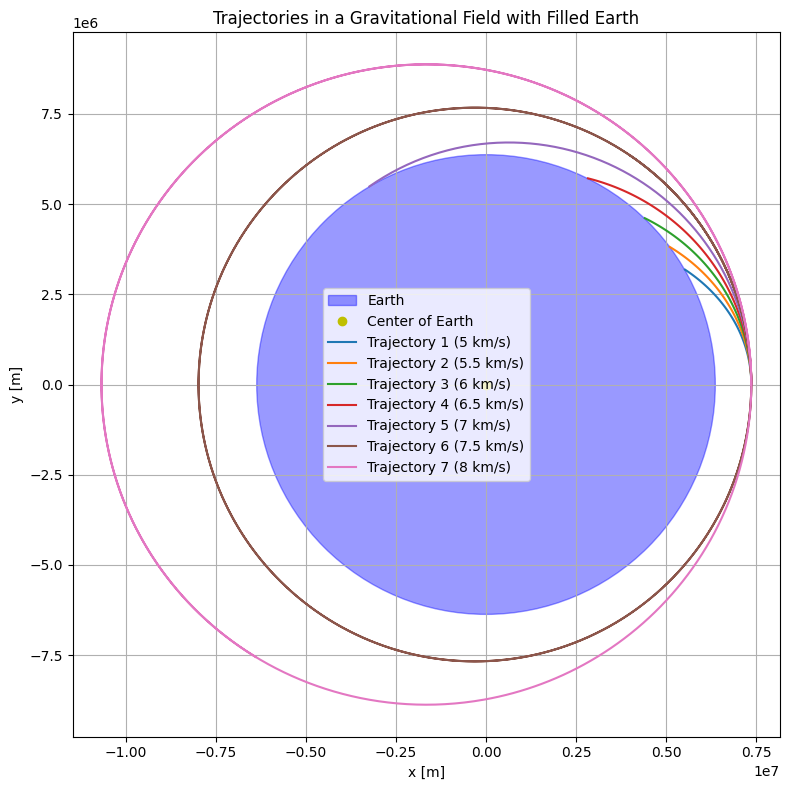
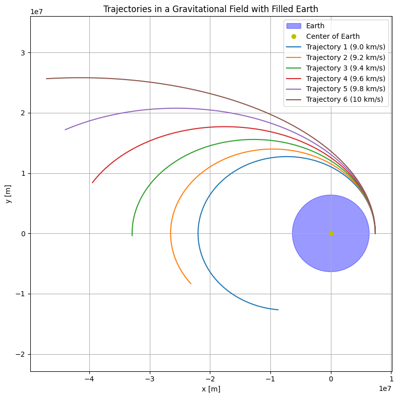
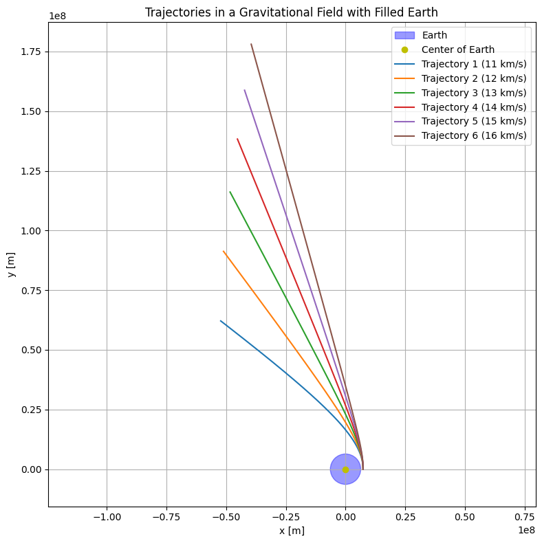

1. Physical and Theoretical Foundations
1.1 Gravitational Model
- Newton’s Law of Universal Gravitation
The gravitational force between Earth and a payload is given by:
$$ F = G \frac{Mm}{r^2} $$
Where:
- \(F\): gravitational force
- \(G \approx 6.674 \times 10^{-11}\ \text{m}^3\text{kg}^{-1}\text{s}^{-2}\): gravitational constant
- \(M\): mass of Earth
- \(m\): mass of the payload
- \(r\): distance from Earth's center to the payload
- Gravitational Acceleration
The acceleration due to Earth's gravity becomes:
$$ \vec{a} = - G \frac{M}{r^2} \hat{r} $$
- Model Assumptions
- Point-mass Earth approximation
- Spherical Earth radius: \(R_\oplus \approx 6.371 \times 10^6\ \text{m}\)
- Optional extensions:
- Non-uniform gravity (e.g., J2 perturbation)
- Atmospheric drag (ignored here)
- Earth’s rotation (relevant for surface-based frames)
1.2 Types of Trajectories
- Trajectory Categories
Depending on the total energy, possible motion paths include: - Elliptical Orbit: \(\varepsilon < 0\)
- Parabolic Trajectory: \(\varepsilon = 0\)
- Hyperbolic Trajectory: \(\varepsilon > 0\)
1.3 Energy-Based Classification
- Specific Mechanical Energy
$$ \varepsilon = \frac{v^2}{2} - \frac{GM}{r} $$
- \(v\): payload speed
- \(r\): distance to Earth’s center
-
\(\varepsilon\): total energy per unit mass
-
Trajectory Conditions Based on \(\varepsilon\)
- \(\varepsilon < 0\): Bound orbit (elliptical)
- \(\varepsilon = 0\): Parabolic escape
- \(\varepsilon > 0\): Hyperbolic escape
1.4 Orbital Velocity Conditions
- Escape Velocity Formula
$$ v_{\text{esc}} = \sqrt{\frac{2GM}{r}} $$
- If \(v < v_{\text{esc}}\): bound orbit
- If \(v = v_{\text{esc}}\): parabolic trajectory
- If \(v > v_{\text{esc}}\): escape on a hyperbolic path
1.5 Summary Table
- Trajectory Type Comparison
| # | Trajectory Type | Specific Energy \(\varepsilon\) | Eccentricity \(e\) | Description |
|---|---|---|---|---|
| 1 | Elliptical | \(\varepsilon < 0\) | \(0 < e < 1\) | Closed orbit |
| 2 | Parabolic | \(\varepsilon = 0\) | \(e = 1\) | Critical escape path |
| 3 | Hyperbolic | \(\varepsilon > 0\) | \(e > 1\) | Open escape trajectory |
2. Initial Conditions Definition
2.1 Key State Variables
- Initial Position
The payload’s position is specified in a coordinate system (typically geocentric inertial or orbital).
In Cartesian coordinates:
$$ \vec{r}_0 = \begin{bmatrix} x_0 \ y_0 \ z_0 \end{bmatrix} $$
Where: - \(x_0, y_0, z_0\) represent the initial position components relative to Earth's center.
-
Initial Velocity
The velocity vector at the moment of release is:\[ \vec{v}_0 = \begin{bmatrix} v_{x0} \\ v_{y0} \\ v_{z0} \end{bmatrix} \]The direction and magnitude of \(\vec{v}_0\) determine whether the payload remains in orbit, descends, or escapes.
-
Initial Altitude
Altitude \(h\) is measured from Earth's surface:\[ h = r_0 - R_\oplus \]Where: - \(r_0 = \|\vec{r}_0\|\) is the radial distance from Earth's center - \(R_\oplus\) is Earth's radius
2.2 Real-World Scenarios
-
Low Earth Orbit (LEO) Release
- Typical altitude: \(200 - 2,000\ \text{km}\)
- Circular orbital speed at altitude \(h\):
$$ v_{\text{LEO}} = \sqrt{\frac{GM}{R_\oplus + h}} $$
- Initial conditions resemble those of the launch vehicle at release time.
-
Suborbital Flight Release
- Altitude typically < \(1000\ \text{km}\), may fall back to Earth.
- Initial vertical component of velocity is significant.
- May include atmospheric drag in lower portions of the trajectory.
-
Elliptical Orbit Transfer
- If a payload is released during a transfer orbit:
$$ v_0 \ne v_{\text{circular}} $$
- Requires vector analysis of the release point within an elliptical path.
2.3 Summary of Required Initial Data
- To simulate or predict the payload’s trajectory, you must define:
- Initial position vector \(\vec{r}_0\)
- Initial velocity vector \(\vec{v}_0\)
- Mass of Earth \(M\)
- Gravitational constant \(G\)
- Earth radius \(R_\oplus\)
- Atmospheric model (optional)
- Reference frame (e.g., inertial or rotating)
3. Equations of Motion
3.1 Newton’s Second Law in Gravitational Context
- Basic Formulation
According to Newton’s Second Law:
For a gravitational two-body system, the only force acting on the payload is gravity:
Substituting into Newton’s law:
Canceling \(m\) (the payload's mass) from both sides:
This gives the second-order differential equation governing motion:
Where: - \(\vec{r}\) is the position vector from Earth’s center to the payload - \(r = \|\vec{r}\|\) is its magnitude
3.2 Vector Form of Equations of Motion
- State-Space Representation
The motion can also be expressed as a system of first-order differential equations:
This is commonly used for numerical integration in orbital simulations.
3.3 Orbital Plane Simplification (2D Case)
- Planar Motion Assumption
Assuming the payload moves in a fixed 2D orbital plane (e.g., \(xy\)-plane):
The equations of motion become:
3.4 Conservation Laws
- Energy Conservation
In the absence of external forces (like atmospheric drag), the specific mechanical energy is conserved:
- Angular Momentum Conservation
Angular momentum per unit mass is also conserved:
Its magnitude is:
Where \(\theta\) is the angle between \(\vec{r}\) and \(\vec{v}\).
3.5 Kepler’s Laws (Brief Overview)
-
Kepler’s First Law:
The orbit of a body around Earth is an ellipse with Earth at one focus. -
Kepler’s Second Law:
The line joining the body and Earth sweeps out equal areas in equal times. -
Kepler’s Third Law:
The square of the orbital period \(T\) is proportional to the cube of the semi-major axis \(a\):
4. Numerical Simulation Framework
4.1 Motivation for Numerical Methods
- Why Numerical Simulation?
The equations of motion for orbital mechanics are nonlinear and, in most practical cases, do not admit closed-form solutions — especially when: - Initial conditions are arbitrary
- Non-conservative forces (e.g., drag) are present
- Complex mission scenarios (e.g., staged releases, planetary perturbations)
Thus, we rely on numerical integration to approximate the trajectory over discrete time steps.
4.2 Discretizing the Equations of Motion
- State Vector Formulation
We define the system state vector:
The derivative of the state vector is:
This formulation is well-suited to numerical solvers like Runge-Kutta or symplectic integrators.
4.3 Common Numerical Methods
- Euler’s Method (First-order)
- Simple but inaccurate for long time scales
-
Update rule:
$$ \vec{y}_{n+1} = \vec{y}_n + \Delta t \cdot \frac{d\vec{y}_n}{dt} $$
-
Runge-Kutta Methods (e.g., RK4)
- Widely used for orbital problems due to better accuracy
-
Uses multiple intermediate steps per time increment
-
Symplectic Integrators
- Preserve energy and angular momentum better over long time periods
- Useful in long-term simulations (e.g., planetary systems)
4.4 Simulation Time Step and Duration
- Choosing \(\Delta t\)
The time step \(\Delta t\) must be: - Small enough to capture fast dynamics - Large enough to ensure reasonable simulation speed
A typical choice for LEO simulations: $$ \Delta t \in [0.1,\ 10] \ \text{seconds} $$
- Stopping Criteria
- Fixed total simulation time \(T_{\text{final}}\)
- Payload reaches specific altitude or distance
- Collision or escape conditions are met
4.5 Handling Escape and Collision
- Escape Detection
Check if:
$$ |\vec{r}| > r_{\text{escape}} \quad \text{and} \quad \varepsilon > 0 $$
Then the payload is no longer gravitationally bound to Earth.
- Collision Detection
Check if:
$$ |\vec{r}| \leq R_\oplus $$
Then the payload has impacted Earth.
4.6 Suggested Tools and Libraries
- Python-Based Tools
numpy: For vector/matrix mathscipy.integrate.solve_ivp: For solving ODEsmatplotlib: For plotting trajectories-
astropy.constants: For astronomical constants -
Others
- MATLAB or Julia for academic research
- STK, GMAT, or Orekit for industry-grade mission simulation
5. Classification of Trajectories
5.1 Based on Specific Mechanical Energy
- Total Specific Mechanical Energy
The energy per unit mass of a payload in a gravitational field is:
Where: - \(v\) is the magnitude of the velocity vector, - \(r\) is the radial distance from Earth’s center.
- Trajectory Categories
| # | Trajectory Type | Energy Condition | Description |
|---|---|---|---|
| 1 | Elliptical Orbit | \(\varepsilon < 0\) | Closed orbit, bound to Earth |
| 2 | Parabolic Path | \(\varepsilon = 0\) | Critical escape, marginally unbound |
| 3 | Hyperbolic Path | \(\varepsilon > 0\) | Open trajectory, escapes gravity |
5.2 Based on Orbital Eccentricity
- Eccentricity (\(e\)) defines the shape of the orbit:
Where: - \(h = |\vec{r} \times \vec{v}|\) is the specific angular momentum.
- Classification by \(e\)
| # | Trajectory Type | Eccentricity \(e\) | Shape |
|---|---|---|---|
| 1 | Circular Orbit | \(e = 0\) | Circle |
| 2 | Elliptical Orbit | \(0 < e < 1\) | Ellipse |
| 3 | Parabolic Path | \(e = 1\) | Parabola |
| 4 | Hyperbolic Path | \(e > 1\) | Hyperbola |
5.3 Directional and Orbital Characteristics
-
Prograde vs. Retrograde
-
Prograde: Velocity vector aligned with Earth’s rotation (more efficient).
-
Retrograde: Velocity vector opposite Earth’s rotation (higher energy cost).
-
Inclination (\(i\))
-
Defined as the angle between the orbital plane and Earth’s equator.
- Determines whether an orbit is:
- Equatorial (\(i \approx 0^\circ\))
- Polar (\(i \approx 90^\circ\))
- Inclined (between \(0^\circ\) and \(90^\circ\))
5.4 Escape and Reentry Criteria
- Escape Condition
Payload has escaped Earth’s gravity if:
- Reentry Condition
Payload will reenter Earth if:
5.5 Practical Interpretation
-
Application in Mission Design
-
Elliptical: Typical for communication satellites, ISS
- Parabolic: Rare in practice; theoretical escape threshold
- Hyperbolic: Used for planetary flybys and interplanetary escape
- Circular: Ideal for stable, constant-altitude orbits
6. Computational Implementation
Numerical simulation is the cornerstone of analyzing orbital trajectories. This section describes the design of simulation components, including constants, integrators, data structures, and plotting, all implemented in Python using the classical Runge-Kutta 4th Order (RK4) method.
6.1 Physical Constants and Setup
We begin by defining global physical constants and parameters for time-stepping.
import numpy as np
import matplotlib.pyplot as plt
# Physical constants
G = 6.67430e-11 # Gravitational constant [m^3 kg^-1 s^-2]
M = 5.972e24 # Mass of Earth [kg]
R_EARTH = 6.371e6 # Radius of Earth [m]
# Launch altitude and initial position
LAUNCH_ALTITUDE = 1e6 # 1000 km altitude
R0 = R_EARTH + LAUNCH_ALTITUDE
# Time configuration
DT = 10 # Time step [s]
MAX_TIME = 4 * 3600 # Total simulation time: 4 hours
6.2 Gravitational Acceleration and RK4 Integration
The payload is subject to Newtonian gravity. The motion is integrated using the RK4 method for high accuracy.
Gravitational Acceleration Function
def acceleration(r):
r_norm = np.linalg.norm(r)
return -G * M * r / r_norm**3
RK4 Integration Function
def rk4_step(r, v, dt):
k1v = acceleration(r)
k1r = v
k2v = acceleration(r + 0.5 * dt * k1r)
k2r = v + 0.5 * dt * k1v
k3v = acceleration(r + 0.5 * dt * k2r)
k3r = v + 0.5 * dt * k2v
k4v = acceleration(r + dt * k3r)
k4r = v + dt * k3v
r_next = r + (dt / 6) * (k1r + 2*k2r + 2*k3r + k4r)
v_next = v + (dt / 6) * (k1v + 2*k2v + 2*k3v + k4v)
return r_next, v_next
6.3 Trajectory Simulation Loop
This function takes an initial velocity (in km/s), initializes the payload state, and simulates its trajectory using RK4.
def simulate_trajectory(v0_kms):
r = np.array([R0, 0, 0], dtype=float)
v = np.array([0, v0_kms * 1000, 0], dtype=float)
positions = [r.copy()]
t = 0
while t < MAX_TIME:
r, v = rk4_step(r, v, DT)
if np.linalg.norm(r) < R_EARTH:
break # Reentry condition
positions.append(r.copy())
t += DT
return np.array(positions)
6.4 Plotting the Trajectories
We use matplotlib to visualize multiple trajectories from various initial speeds. Earth is plotted as a filled circle.
def plot_trajectories(velocity_list):
plt.figure(figsize=(8, 8))
# Draw Earth
earth = plt.Circle((0, 0), R_EARTH, color='blue', alpha=0.4, label='Earth')
plt.gca().add_patch(earth)
plt.plot(0, 0, 'yo', label='Center of Earth')
# Simulate and plot each trajectory
for i, v0 in enumerate(velocity_list):
pos = simulate_trajectory(v0)
x, y = pos[:, 0], pos[:, 1]
plt.plot(x, y, label=f"Trajectory {i+1} ({v0} km/s)")
plt.xlabel("x [m]")
plt.ylabel("y [m]")
plt.title("Trajectories in a Gravitational Field")
plt.axis('equal')
plt.grid(True)
plt.legend()
plt.tight_layout()
plt.show()
6.5 Simulation Examples
🔹 Example 1: Suborbital and Near-Orbital Velocities
plot_trajectories([5, 5.5, 6, 6.5, 7, 7.5, 8])

🔹 Example 2: Elliptical to Escape Velocities
plot_trajectories([9.0, 9.2, 9.4, 9.6, 9.8, 10])

🔹 Example 3: Hyperbolic Escape Trajectories
plot_trajectories([11, 12, 13, 14, 15])

7. Applications and Real-World Scenarios
Understanding different trajectory types is essential for interpreting and designing space missions. The following section maps simulated orbital behaviors to real-world mission contexts, helping bridge theoretical modeling and aerospace application.
7.1 Suborbital Trajectories
Definition:
A suborbital trajectory is one where the object reaches space but does not complete an orbit — it falls back to Earth.
Velocity Condition:
Initial speed less than orbital velocity, typically < 7.6 km/s.
Real-World Examples: - Blue Origin New Shepard flights - NASA’s X-15 rocket plane (1960s) - Ballistic missile paths
Mission Objectives: - Suborbital science and microgravity experiments - Testing heat shields or reentry dynamics - Space tourism
7.2 Elliptical Orbits
Definition:
An orbit with eccentricity between 0 and 1. The object is gravitationally bound but travels at varying altitudes.
Velocity Condition:
Initial speed between circular and escape velocity:
\(7.6\ \text{km/s} < v < 11.2\ \text{km/s}\)
Real-World Examples: - Geostationary Transfer Orbits (GTO) - Molniya orbits (highly elliptical) - Apollo parking orbits before trans-lunar injection
Mission Objectives: - Placing satellites in high Earth orbit - Delaying or staging for interplanetary missions - Long-duration visibility for high-latitude regions
7.3 Circular Orbits
Definition:
An orbit with eccentricity = 0. Constant altitude and velocity.
Velocity Condition:
Exactly the first cosmic velocity:
\(v_{\text{circular}} = \sqrt{\frac{GM}{r}}\)
Real-World Examples: - International Space Station (ISS) - Many Low Earth Orbit (LEO) satellites - Earth observation missions
Mission Objectives: - Communication and surveillance satellites - Crew habitats and long-term missions - Scientific research in microgravity
7.4 Parabolic Trajectories
Definition:
Theoretical boundary case between bound and unbound motion (\(e = 1\)).
Velocity Condition:
Exact escape velocity:
\(v = \sqrt{\frac{2GM}{r}}\)
Real-World Examples: - Rare in practice; used as a design threshold - Simulated for emergency escape paths
Mission Objectives: - Escape Earth without long-term orbit - Trajectory modeling for asteroid deflection concepts
7.5 Hyperbolic Trajectories
Definition:
Open trajectory with eccentricity > 1. The object escapes Earth's gravity permanently.
Velocity Condition:
Initial speed greater than escape velocity
Real-World Examples: - Voyager 1 & 2 and Pioneer missions - Flybys for gravity assists - Space probes leaving Earth for other planets
Mission Objectives: - Interplanetary travel - Deep-space exploration - Gravitational assist maneuvers (e.g., slingshot effects)
7.6 Summary Table
| Trajectory Type | Velocity Range | Eccentricity \(e\) | Mission Context |
|---|---|---|---|
| Suborbital | \(v < 7.6\ \text{km/s}\) | \(e < 1\) | Reentry testing, tourism, missiles |
| Circular Orbit | \(v = 7.6\ \text{km/s}\) | \(e = 0\) | ISS, GPS, Earth science missions |
| Elliptical Orbit | \(7.6 < v < 11.2\) | \(0 < e < 1\) | GTOs, lunar transfers, Molniya orbits |
| Parabolic Path | \(v = 11.2\ \text{km/s}\) | \(e = 1\) | Escape threshold modeling |
| Hyperbolic Path | \(v > 11.2\ \text{km/s}\) | \(e > 1\) | Voyager, Mars missions, deep space |